Вызов принят
История одного проекта
История одного проекта
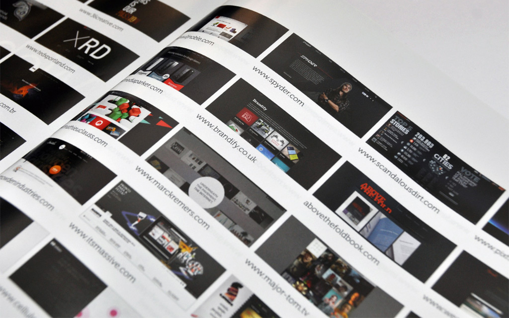
приобретённого сайта
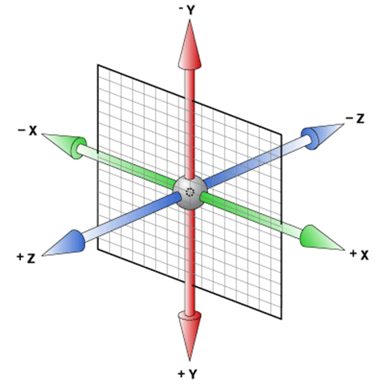
.scene { perspective: px; }.scene { perspective: px; }HTML:.scene { perspective: 200px; }.cube { position:relative; width: 50px; height: 50px; transform-style: preserve-3d; }.side { position: absolute; ... }
<div class="scene"><div class="cube"><div class="side back"></div><div class="side left"></div> <div class="side right"></div><div class="side top"></div> <div class="side bottom"></div><div class="side front"></div></div></div>
.back { transform: translateZ(-25px); }.left { transform: translateX(-25px) rotateY(90deg); }.right { transform: translateX(25px) rotateY(90deg); }.top { transform: translateY(-25px) rotateX(90deg); }.bottom { transform: translateY(25px) rotateX(90deg); }.front { transform: translateZ(25px); }
.cube { transform: rotateX(42deg); }.back { transform: translateZ(-25px) rotateX(180deg); }.bottom { transform: translateY(25px) rotateX(270deg); }
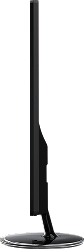
.cube { transform:translateZ(-25px); }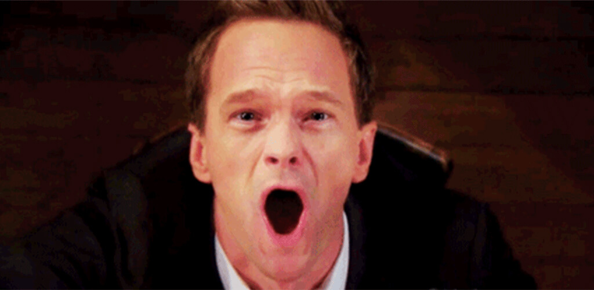
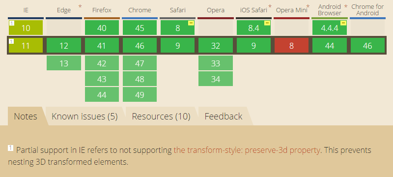
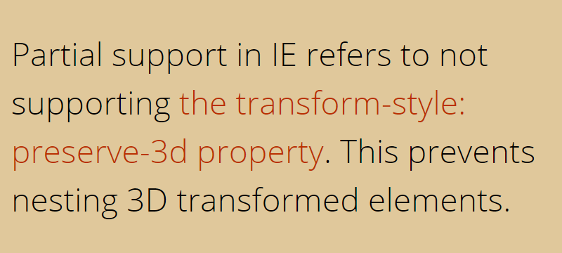
.scene {}.cube { position:relative; width: 50px; height: 50px; transform: perspective(200px) translateZ(-25px); }.side { position: absolute; ... transform-origin:50% 50% -25px; backface-visibility:hidden; }
.back { transform: perspective(200px) rotateY(180deg); }.top { transform: perspective(200px) rotateX(90deg);}.bottom { transform: perspective(200px) rotateX(-90deg); }.front { transform: perspective(200px); }
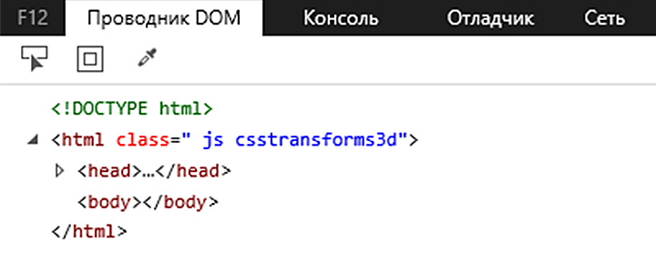
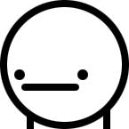
var element = document.createElement('p');document.body.insertBefore(element, null);var propName = 'transform-style';if ('webkitTransformStyle' in document.documentElement.style) propName = '-webkit-'+propName;element.style[propName] = 'preserve-3d';var propValue = window.getComputedStyle(element, null) .getPropertyValue(propName);document.body.removeChild(element);return (propValue === 'preserve-3d');
transform:translateZ(125px) scale(.5);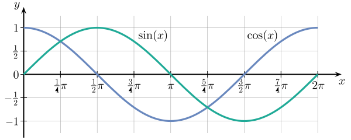
front sin(a) * -1
bottom cos(a)
back sin(a)
top cos(a) * -1
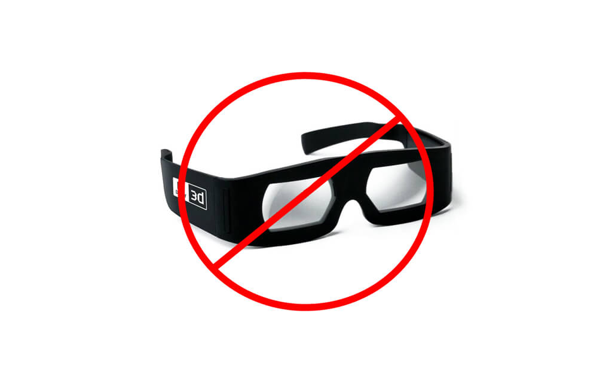
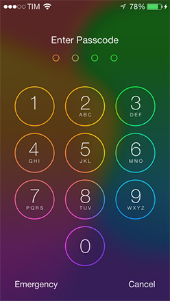
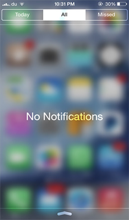
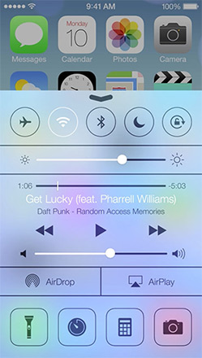
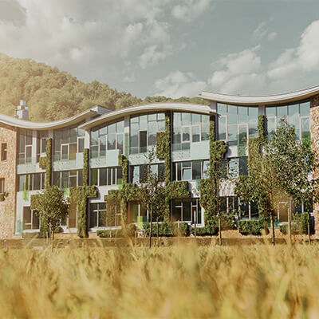
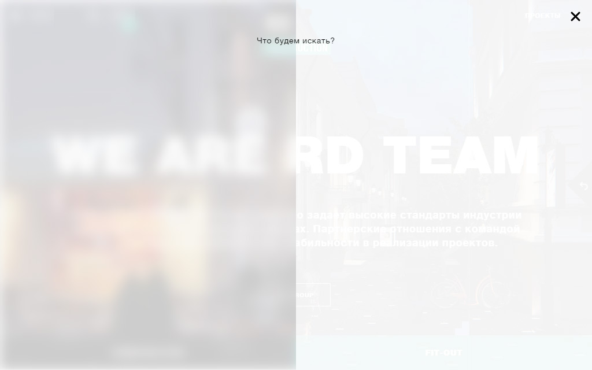
<filter id="blur">
<feGaussianBlur stddeviation="10" />
</filter>div { filter: url(#blur); }<svg>
<filter id="blur">
<feGaussianBlur stddeviation="10" />
</filter>
<image filter="url(#blur)"
xlink:href="image.jpg"
width="200" height="200">
</image>
</svg>
<svg width="100%" height="125%">
<g filter="url(#blur)">
<rect x="0" y="0" width="100%" height="100%"
fill="#F2F3F5"></rect>
<image width="100%" height="80%"
xlink:href="image.jpg"></image>
</g>
</svg>
Леген ... дарно
Способы:
Обычный запрос:
Нужно срочно!
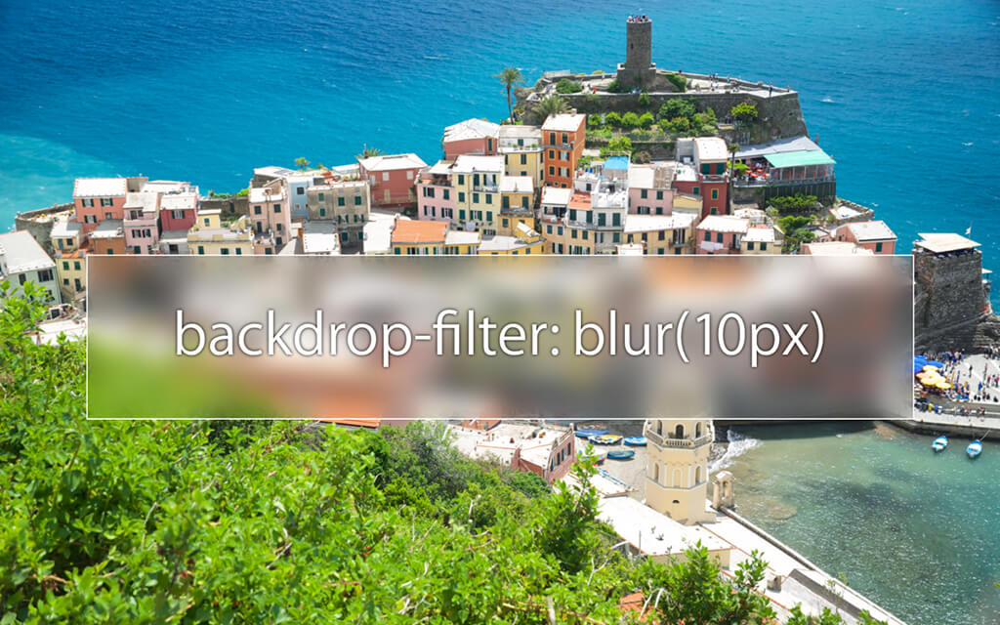
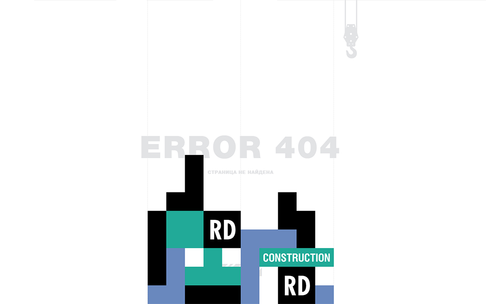